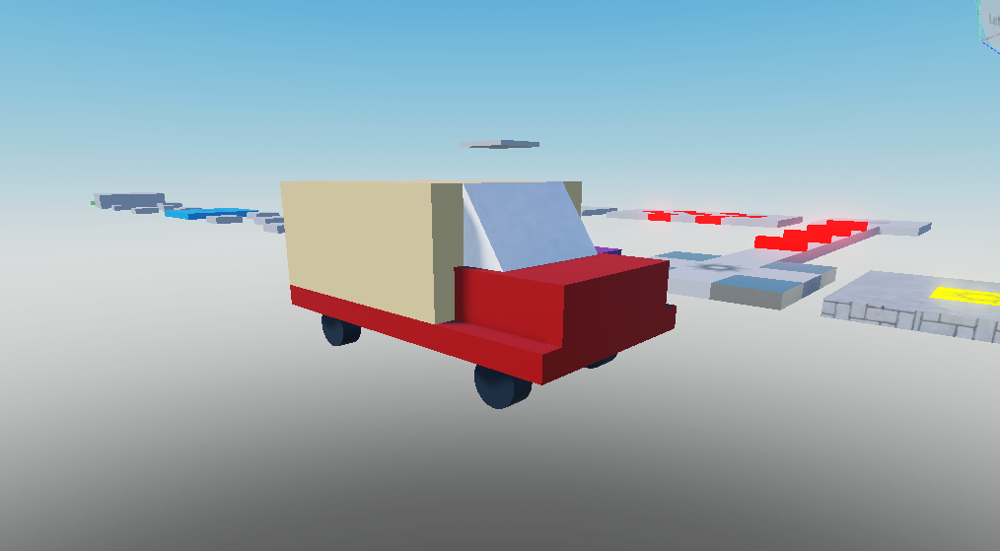
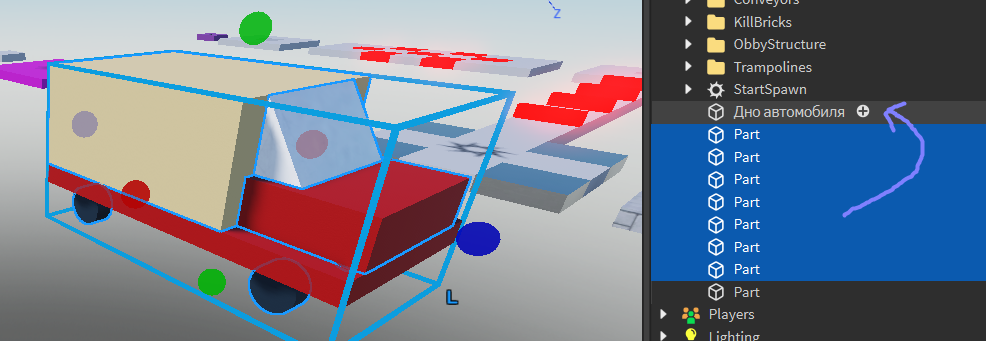
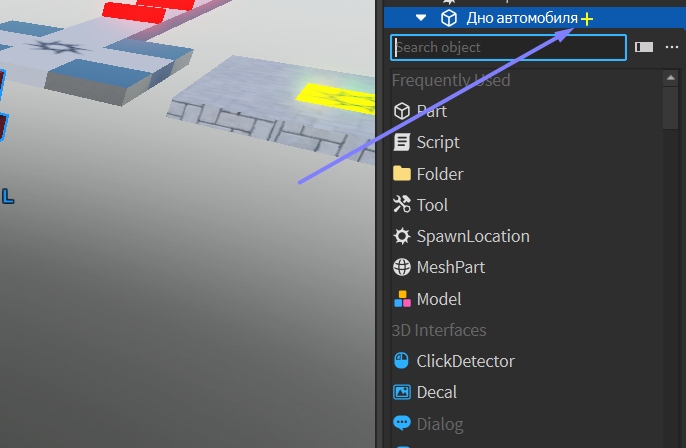
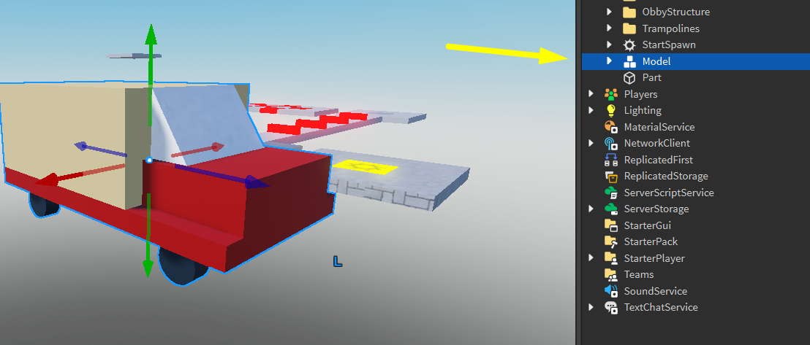

Создание игр в Roblox Studio
Родительско-дочерние отношения и Explorer!
Сегодня мы разберем одну из самых важных концепций разработки игр в Roblox Studio - детско-родительским отношения между объектами.
По умолчанию все объекты, созданные в Roblox Studio, независимы и могут быть перемещены независимо от других объектов. Это удобно в тех случаях, когда мы создаем, например, новые блоки в Obby, но при работе с более сложными объектами, состоящими из множества частей, это создает ощутимые неудобства - чтобы переместить такой объект, нужно будет выделить все его детали.
Родительско-дочерние отношения это?
Чтобы проще это понять можно представить ситуацию. Есть мальчик Петя. У него в руке есть вкусное мороженное! Если петя сделает шаг вперед, то и мороженное в пространстве переместится на один шаг, следуя Пете. Значит в данной ситуации Петя = родительский элемент, а мороженное = дочерний. Если Петя сядет в автобус, и автобус начнет движение, то теперь Петя повторяет перемещение автобуса, значит Петя = дочерний элемент для автобуса, а автобус = родительский элемент для Пети. Важно понимать, что автобус тоже является дочерним, например по отношению к земле. Земля - это планета, она вращается вокруг солнца = самый главный родительский элемент.
Для более наглядного практического примера создадим какой-нибудь сложный объект, например, машину. Чтобы такая машина двигалась, необходимо двигать все ее части поочереди, хотя они должны двигаться как единое целое.
В этом случае применяется родительско-дочерние отношения - одна деталь назначается главной, а остальные становятся её "детьми". "Дети", т.е. дочерние элементы, полностью зависят от движения главного "родительского" элемента.
Чтобы сделать детали дочерними к одной из частей машины нужно определить главную часть. Пусть это будет "дно автомобиля". В таком случае нам необходимо выделить в Explorer все дочерние элементы и перетянуть их на родительскую деталь.
Вспомним. Explorer(Проводник) - это окно, которое содержит иерархию всех элементов нашей игры.
Готово! Теперь попробуем трансформировать (переместить, увеличить, перевернуть) родительскую деталь, все дочерние будут повторять её движения! Важно добавить, что если мы поднимемся к самому первому элементу Explorer, то увидим там Workspace - та самая наша Планета! (То есть наш самый главный родитель в приложении)
Изучаем Explorer
Дочерние объекты можно создавать не только при помощи перетаскивания, и это могут быть не только легкие примитивные элементы (блоки).
Около каждого выбранного объекта в Explorer всегда есть значок плюса - нажав на него, можно увидеть список возможных компонентов, который можно добавить к нему в качестве дочерних элементов.
В предложенным списке можно найти эффекты, которые можно добавить на выбранный элемент.
Группировка объектов
Следующие, что нужно узнать - это создание и работа с группами объектов.
Родительско-дочерние отношения помогают решить определенные задачи, однако зачастую удобнее использовать группы. В отличие от предыдущего подхода, группы автоматически становятся родительским объектом для всех выделенных деталей и позволяет сразу выделить всю сложную модель нажатием на любую его деталь. При этом, если раскрыть группу в Explorer, внутри нее можно будет найти все ее составляющие.
Для объединения объектов в группу необходимо выбрать их множественным выделением и либо нажать правой клавишей мыши и выбрать вариант Group, либо использовать сочетание клавиш Ctrl-G. После объединения все детали при выделении будут восприниматься как единое целое.
Попрактикуемся!
Чтобы закрепить знания по работе с родительско-дочерними отношениями и группами мы создадим большой составной объект - винтовую лестницу!
Этапы:
- Создаем первую ступень
- Сгруппировать ступени
- Продублируем группу
- Провернем новую группу, чтобы первая и вторая группа образовывали подъём
- Повторяем 3 и 4 шаг, пока у нас не получится высокая винтовая лестница
- Соединяем две верхние ступени мостиком
Лестница готова! Попробуем выделить все ступени (нажмем на первую, зажмем Shift, нажмем на последнюю) Разгруппируем все ступени нажатием Ctrl+U.
Не снимая выделение сгруппируем все ступени в одну группу "Лестница" или "Stairs".
В конце лестницы добавить чекпоинт (дублировать уже существующий).
Домашкаа 😁
Необходимо самостоятельно закрепить работу с группами.
- Сгруппировать в одну группу киллбрики (красные блоки, которые убивают при касании) и в другую группу нейтральные платформы.
- Создать сложный объект из нескольких частей. Разместить его после лестницы. Добавить на данный объект эффект!
- Декорировать новый участок препятствий.